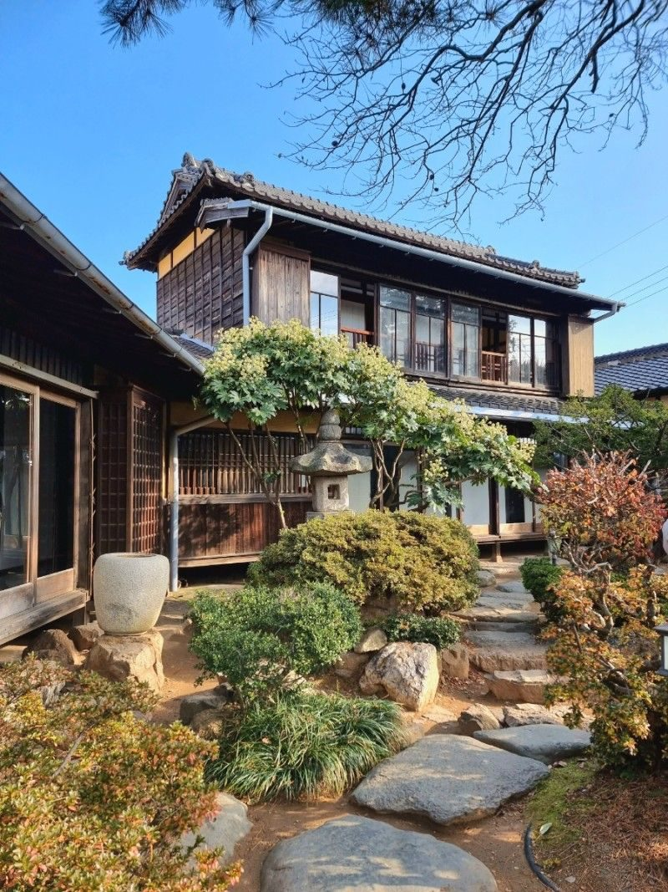
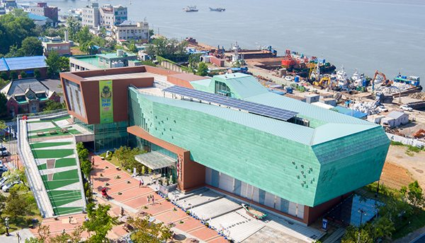
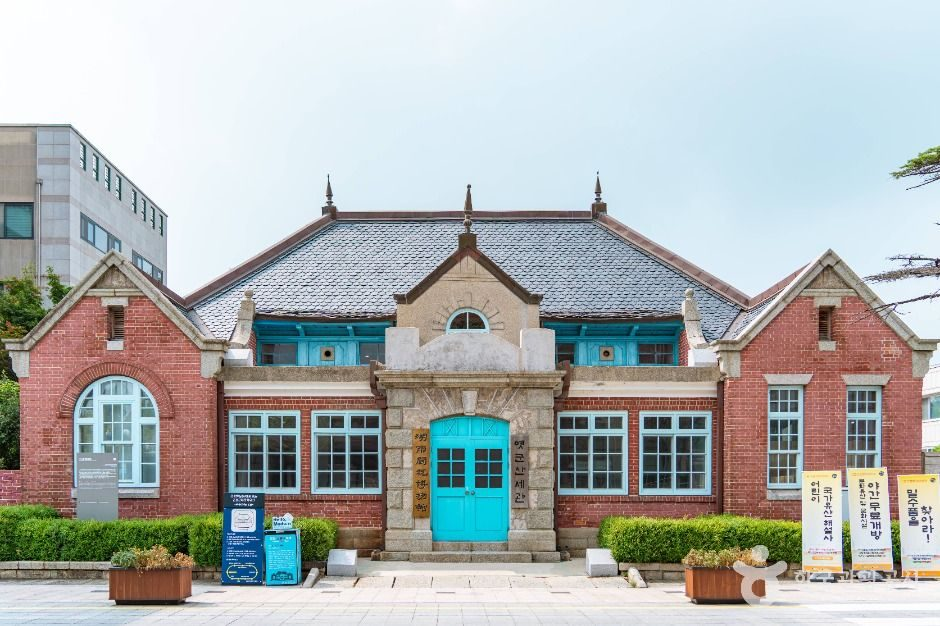
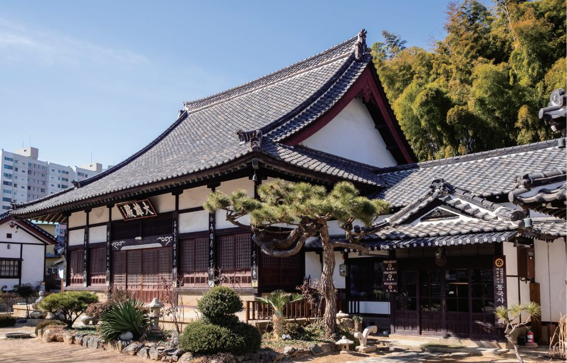

早稲田大学の五味渕典嗣先生をお迎えし、2月14日（日）は群山での現地学術踏査・ラウンドテーブル、15日（月）はソウルでのフォーラムを予定しています。 Welcoming Professor Noritsugu Gomibuchi of Waseda University, we will hold a field study and roundtable in Gunsan on Sunday 14 February and a forum in Seoul on Monday 15 February. 와세다대학교 고미부치 노리쓰구 교수를 모시고 2월 14일(일)에는 군산에서 현지 학술답사와 라운드테이블을, 15일(월)에는 서울에서 포럼을 진행할 예정입니다.
解放を迎えた人々にとっての「解放空間」は、そこに暮らしていた日本人にとって「離散」の空間でもありました。敗戦直後の地位の逆転が生んだもう一つの社会的孤立を、日韓の大学院生・若手研究者が現場でともにたどり、互いのまなざしを交わします。 What was a "space of liberation" for Koreans was also a space of dispersal for the Japanese who lived there. Graduate students and early-career researchers from Japan and Korea will trace together, on site, the other form of social isolation created by the reversal of status after 1945, and exchange their perspectives. 한국인에게 ‘해방 공간’이었던 곳은 그곳에 살던 일본인에게 ‘이산’의 공간이기도 했습니다. 패전 직후 지위의 역전이 만들어낸 또 다른 사회적 고립을 한일 학문후속세대가 현장에서 함께 살펴보고 서로의 시선을 나눕니다.

日本人高級住宅地に建てられた広津吉三郎の邸宅。解放後に「敵産家屋」に分類され、持ち主を変えて今に残ります。The residence of Kichisaburō Hirotsu in the former Japanese upper-class quarter. Classified as "enemy property" after liberation, it still stands under new ownership.일본인 고급 주택지에 지어진 히로쓰 기치사부로의 저택. 해방 후 적산가옥으로 분류되어 주인이 바뀐 채 지금까지 남아 있습니다.

植民地期の群山の社会と歴史を概観し、踏査の背景をつかむ場所です。An overview of Gunsan's society and history in the colonial period, giving background for the walk.식민지기 군산의 사회상과 역사를 조망하며 답사의 배경지식을 얻는 곳입니다.

1908年建立。植民地期、湖南地方の穀物流出の主要ルートの一つでした。Built in 1908, it was one of the main routes through which grain left the Honam region in the colonial period.1908년 건립. 식민지기 호남 지역 곡물 유출의 주요 경로 가운데 하나였습니다.

韓国に唯一残る日本式寺院建築。1913年完成の曹洞宗系寺院で、戦後に接収・移管されました。The only Japanese-style temple building left in Korea. Completed in 1913 as a Sōtō Zen temple, it was confiscated and transferred after the war.국내에 유일하게 남은 일본식 사찰 건축물. 1913년 완공된 조동종 계열 사찰로, 종전 후 압류·이관되었습니다.
敵産家屋を改装したカフェ（予定）で、日韓の大学院生・若手研究者が自由に意見を交わし、今後の研究課題を探ります。At a café converted from an "enemy property" house (tentative), graduate students and early-career researchers from both countries exchange views freely and look for research questions to pursue.적산가옥을 개조한 카페(예정)에서 한일 학문후속세대가 자유롭게 의견을 나누고 앞으로의 연구 과제를 도출합니다.
戦時に動員された日本国内のマイノリティと、隔離政策によって孤立させられた韓国のハンセン病患者とその家族。「国家暴力と排除」という共通の文脈から、日韓の文学と歴史に現れた社会的孤立を比較し、排除された者たちの語りが今日もつ意味を考えます。 Minorities in Japan mobilized during the war, and Hansen's disease patients and their families in Korea isolated by segregation policy, share a common context of state violence and exclusion. Comparing how social isolation appears in Japanese and Korean literature and history, the forum asks what the narratives of the excluded mean today. 전시에 동원된 일본 내 마이너리티와, 격리 정책으로 고립된 한국의 한센병 환자와 가족. ‘국가폭력과 배제’라는 공통의 맥락에서 한·일 문학과 역사 속 사회적 고립을 비교하고, 배제된 자들의 서사가 오늘날 갖는 의미를 조명합니다.
統監府・統監官邸・朝鮮神宮などの跡地をたどる約1.7kmの道です。A 1.7 km trail linking the sites of the Residency-General, the Resident-General's residence and the Chōsen Shrine.통감부·통감관저·조선신궁 터 등을 잇는 약 1.7km의 탐방로입니다.
開港期から現代までの韓国近現代史を展示しています。Exhibits Korean history from the opening of the ports to the present.개항기부터 현대까지의 한국 근현대사를 전시합니다.
植民地期に損なわれ、旧朝鮮総督府庁舎の撤去を経て復元が進む王宮です。A royal palace damaged in the colonial period and restored after the former Government-General building was removed.식민지기에 훼손되었다가 옛 조선총독부 건물 철거 이후 복원이 이어지고 있는 궁궐입니다.